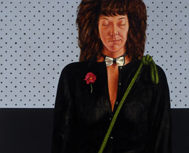

Upcoming Exhibitions
The Subject is Light: The Henry and Sharon Martin Collection of Contemporary Realist Paintings
March 18, 2011 – August 21, 2011
 This exhibition presents artworks by some of the most skilled contemporary representational artists working today. Featuring images of New England seascapes – ocean views that transcend geography and appeal to everyone, it also includes some outstanding still lifes. The organizing principle of the exhibition is the opportunity it affords the viewer to study how the best contemporary artists depict the changing effects of light in nature – whether the subject is a seascape or a still life. Click here to read the Fine Art Connoisseur article about the Martin Art Collection.
This exhibition presents artworks by some of the most skilled contemporary representational artists working today. Featuring images of New England seascapes – ocean views that transcend geography and appeal to everyone, it also includes some outstanding still lifes. The organizing principle of the exhibition is the opportunity it affords the viewer to study how the best contemporary artists depict the changing effects of light in nature – whether the subject is a seascape or a still life. Click here to read the Fine Art Connoisseur article about the Martin Art Collection.
Face Off: Portraits by Contemporary Artists
April 10 – September 18, 2011
This intriguing exhibition will present a wide variety of portraits by artists working in recent years. Once considered retrograde, portraiture has assumed a central role in the art of our time. Artists have turned to portraiture as a major vehicle for addressing issues of identity and gender, race and class, and the advent of the information age. The show includes portraits from the museum's collection as well as loaned works by Benny Andrews, Alice Neel, William Wegman, David LaChapelle and Barkley L. Hendricks, among others. Face Off: Portraits by Contemporary Artists will open up new perspectives on the art of portraiture for visitors.
Our exhibitions have been funded in part by generous grants from the Frank Loomis Palmer Fund, Bank of America, Trustee and the Connecticut Humanities Council, with support from the Connecticut Commission on Culture and Tourism.
For information on the Museum Exhibitions, contact: Dr. Nancy Stula, Director and Curator, Lyman Allyn Art Museum. For general information, please email us at info@lymanallyn.org